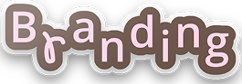
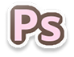
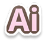
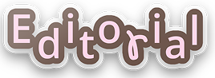

(Click en las fotos para ver más)
RUIDO
Taller de diseño 2
Identidad visual para un festival de cine ficticio en tiempos de crisis. El trabajo consistió en el diseño de un afiche como pieza central, seguido de un programa en formato despegable y diferentes piezas de comunicación donde se pueda contemplar el sistema visual.
Area

Programas utilizados


ANSIEDAD
Imagen y letra conceptual
Este trabajo, realizado de manera analógica, consistió en crear imágenes a partir de una palabra: la ansiedad. A través de distintas tipologías, se busco representar cómo se siente y transmitir las sensaciones que genera mediante diferentes recursos visuales.
Area
Programas utilizados
KOREAN WAVE
Espacio tipográfico 3
Cronograma de actividades para un festival de la cultura coreana en Argentina. La propuesta explora la organización de la información, las jerarquías tipográficas y el uso del color para construir una pieza visual dinámica y fácil de recorrer.
Área

Programas utilizados
Si te gustó algo, presiona el siguiente sticker :)
